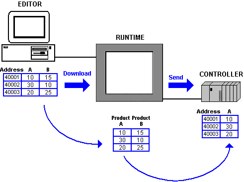
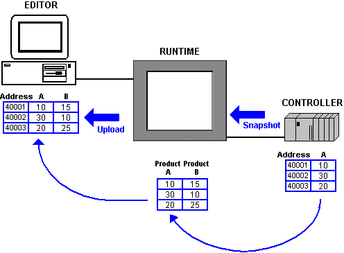
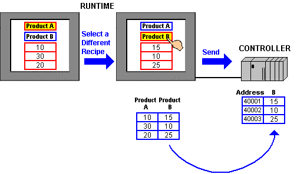

|
|
|
|
|
|
|
|
Recipe is a feature that allows you to work with specified recipe values of multiple device addresses at the same time. By creating a simple user interface, you can maintain a consistent production process just by defining the production parameters. Now, when the workflow changes or needs changing, the operator will no longer have to go through a complex process. With recipe, you can:
Write values of one recipe (with the Send operation) from the target machine to your equipment.

Read values of a recipe (with the Snapshot operation) from your equipment to the target machine.

Change the display of different recipes at Runtime, then select a recipe and use the Send operation to send and overwrite the recipe values currently in your equipment.

Vijeo-Designer provides some key Recipe features:
Recipes can be automated or controlled using buttons on the panel. Using Recipe parts you can view and alter the list of recipe groups and recipes.
For each recipe group, there is a single recipe group file that contains the recipes and other recipe-related information. You can create or modify recipes in the Recipe Group Editor or at Runtime, which may be required when hardware operates differently from one site to the next. Using the Upload function, you can replace the recipes in the Editor with recipes modified at Runtime.
Toolchest parts are available in Vijeo-Designer to make it easier to manage recipe groups in an application or to perform recipe operations. You will find a collection of parts, such as a recipe manager and recipe status, and buttons for loading, saving, sending, and taking snapshots.
You can use the Recipe function in any production environment that requires an operator interface to monitor or control machines or automated processes.
For the purposes of describing Recipe, its key concepts, and functions, an example of a pizza production process will be used throughout this section. Great Pizza Works is a company that produces different varieties of pizzas on its factory production line. It has three recipe groups: Dough, Sauce, and Toppings. Each recipe group has different recipes with ingredient variations and different machinery settings. Great Pizza Works creates thin crust, thick crust, and pan crust doughs; it creates spicy, medium, and mild sauces; it creates pepperoni, ham and pineapple, cheese, and vegetarian pizzas.
Read the subsequent sections, using the pizza production process, to guide you through Vijeo-Designer's Recipe function.